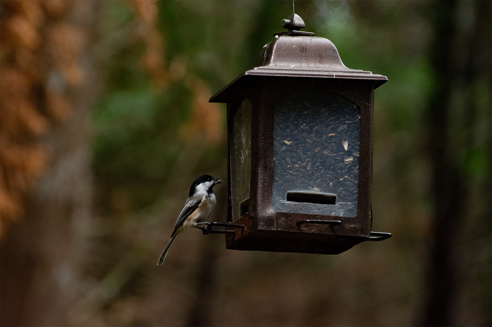

J'ai pu prendre de nombreuses photos et realiser une video de mon voyage à Barcelone à l'occasion du OFFF 2018.
Voir plus
La region de Matane, Quebec est très interessante pour sa faune et sa flore notamment. Ce projet m'as permis de me familiariser avec l'utilisation d'un objectif à lingue focale.
Voir plus
Collection d'autoportraits. Chacun représente un style different tout en repressentant la meme personne.
Voir plus